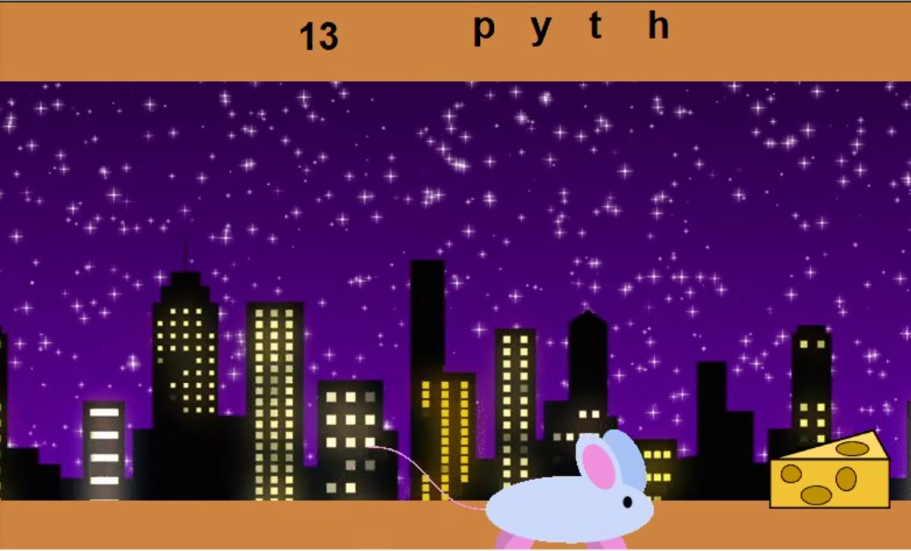
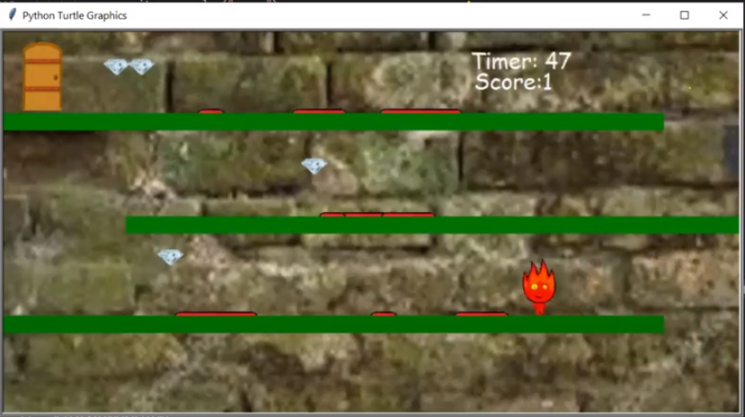

This is my Portfolio Page!

This is the first projest that we have created in APCSP using python turtle. We created a pollution psa that displays a meaningful message about pollution.
We began the code by displaying the background of the ocean with sand and seaweed. Following this we had a fish swim accrose the screen to establish a lavish ocean enviorment. Then out of no where a plastic bag flotted down and rested on some seaweed. Sadly a turtle swims by and consumes the plastic bag resulting in its death. Finaly text explaning what happend is desplayed across the screen and the message dont pollute is shown.

This is the second project. for this game we made a mouse and cheese hangman game. In this game we made the user to select letters to attempt to guess the word. If the user was able to guess the a correct letter the mouse moved closer to the cheese.
This is the third project that we made in python turtle. This game is our take on the game fire boy and water girl. We constructed platforms with obsticals and gems. The goal is to reach the end and collect as many gems as possible.

Modified bits in pictures.